Coleirinho
 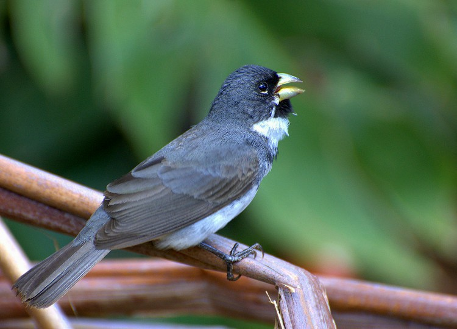
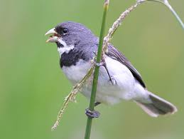
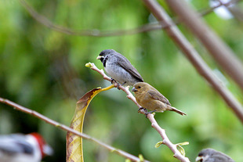
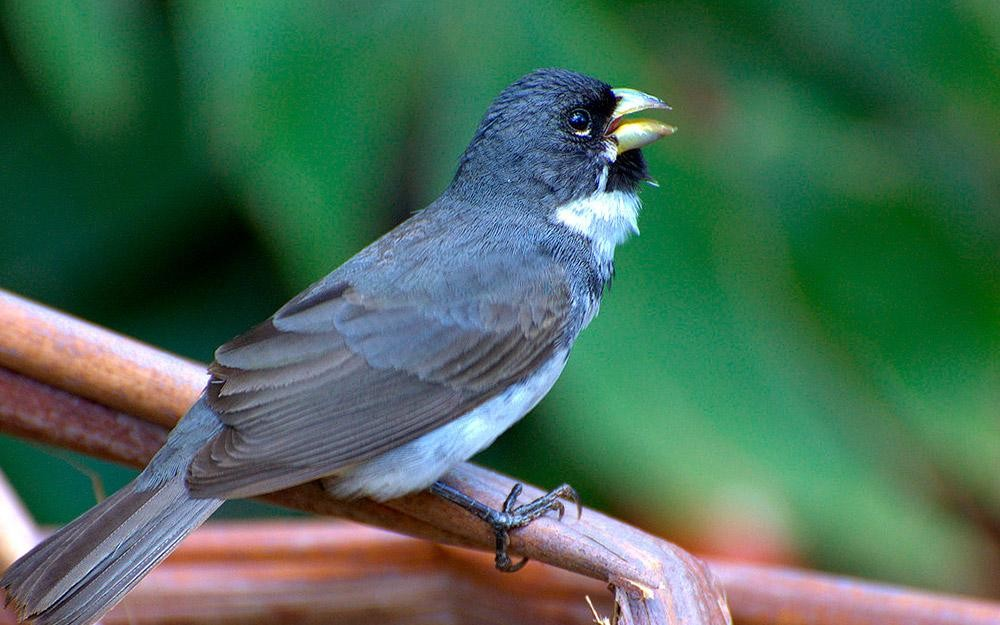
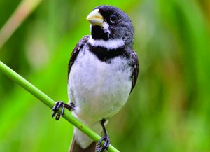
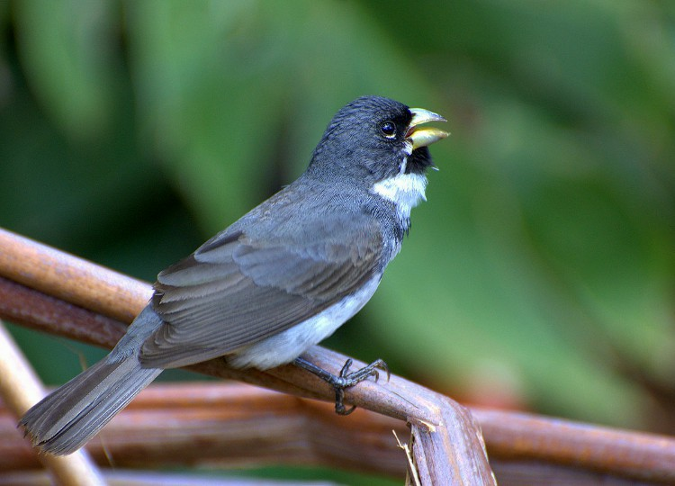
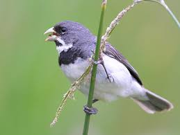
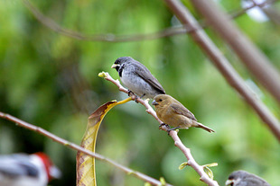
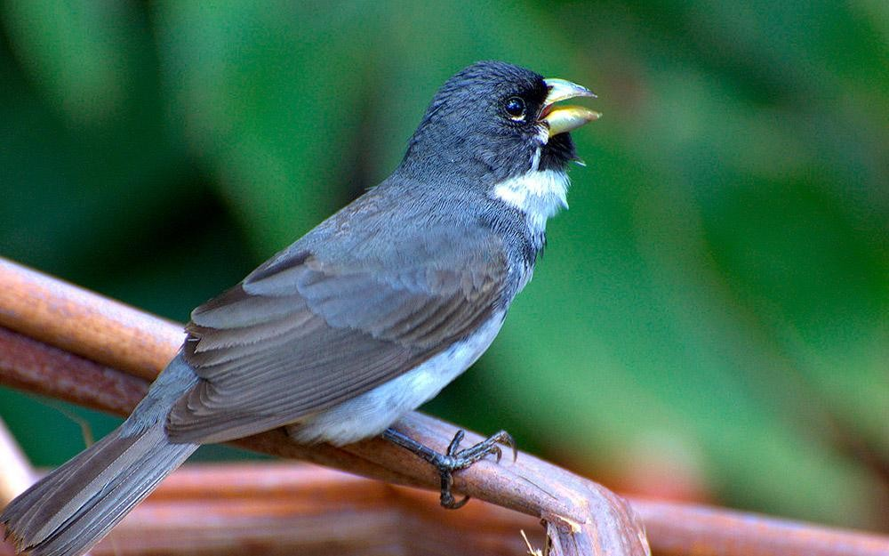
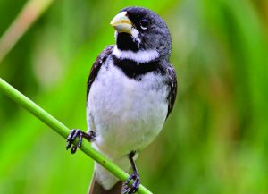
INFORMAÇÕES SOBRE O ANIMAL
- Nome Científico: Sporophila caerulescens
(Vieillot, 1823) - Nomes Populares: coleiro, coleirinha, papa-capim ou papa-arroz.
- Atualmente a espécie não corre risco de extinção.
Classificação Biológica
- Dominio: Eukaryota
- Reino: Animalia
- Filo: Chordata
- Classe Aves
- Ordem: Passeriformes
- Família: Thraupidae
- Espécie: S. caerulescens
Nutrição e Hábitos Alimentares
- Tipo de Nutrição: Heterotrófico
- O Coleirinho, cientificamente conhecido como Sporophila caerulescens, é uma ave granívora. Isso significa que sua dieta baseia-se principalmente em grãos e sementes. A espécie tem o costume de se reunir em capinzais, locais onde utiliza seu bico forte para quebrar e consumir as sementes disponíveis. Além disso, é comum encontrar essas aves nos capinzais, onde soltam diversos grãos pela região. Um dos nomes pelo qual elas podem ser chamadas é papa-arroz, devido ao hábito que o coleirinho tem de também usar plantações de arroz para buscar alimento. Eles também apreciam os frutos do Tapiá ou Tanheiro (Alchornea glandulosa) e costumam frequentar comedouros com sementes e quirera de milho.
Morfologia Básica
- Tamanho e Peso: O Coleirinho mede cerca de 12 cm e pesa aproximadamente 10,5 g.
- Aparência do Macho: O macho possui um colar branco e negro ao lado da garganta. Além do colar, ao lado da garganta negra um “bigode” branco define a área sob o bico amarelado ou levemente cinza-esverdeado.
- Aparência da Fêmea: A fêmea é toda parda, mais escura nas costas. Sob luz excepcional, é possível ver que ela também possui o esboço do desenho da garganta do macho.
- Coloração
- Macho: O macho tem uma gola distinta branca e preta, da qual seu nome deriva. Além deste colar, ele tem um bigode branco próximo à garganta preta. Esse bigode define a área sob o bico, que é amarelado ou levemente cinza-esverdeado. Existem machos com o peito branco e outros com tom amarelo.
- Fêmea: A fêmea tem uma coloração mais discreta, com tons de marrom e cinza.
Comportamento Geral e Distribuição no Território
- O coleirinho assim como outras aves granívoras, passa a maior parte do seu tempo andando e pulando no chão em busca de sementes.
- Distribuição
- é uma ave que habita em campos abertos e capinzais. Ele ocorre praticamente em todo o Brasil, com exceção da Região Amazônica e Nordeste.
Especificamente, o Coleirinho está presente em grande parte do Centro-Sul do Brasil e em alguns países vizinhos. Ele vive basicamente em beiradas de matas, pomares, pastos, brejos, capoeiras e praças das cidades, podendo viver em grupos de 6 a 20 indivíduos. Devido ao crescente desmatamento, observa-se o aparecimento destas aves em regiões urbanas. - Mapa de Ocorrência 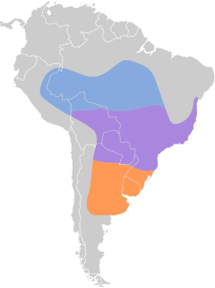
Reprodução
- Reproduz-se entre agosto e fevereiro, sendo que em algumas regiões e em casos de abundância de alimento pode reproduzir-se durante todo o ano, principalmente em regiões de clima quente. Sua ninhada geralmente constitui-se de dois filhotes, os quais são valentemente protegidos pelos pais contra predadores, não obstante seu tamanho reduzido. Formam casais fiéis, e sua reprodução em cativeiro se dá facilmente, necessitando apenas de um espaço amplo, preferencialmente acima de 2 metros quadrados, sendo que sua cópula acontece com a fêmea parada e o macho a sobrevoa durante longos períodos.
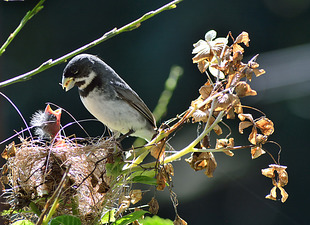
Coleiro alimentando os seus filhotes.